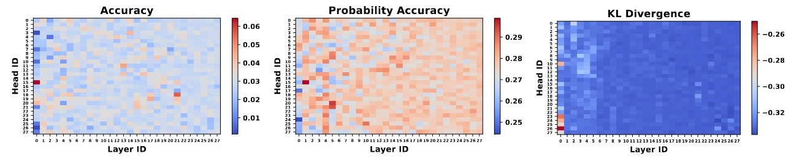
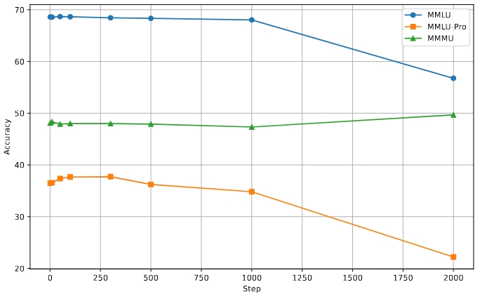
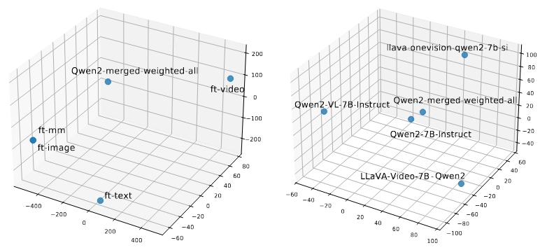

Omni-modal language models (OLMs) aim to integrate and reason over diverse input modalities—such as text, images, video, and audio—while maintaining strong language capabilities. Despite recent advancements, existing models, especially open-source ones, remain far from true omni-modality, struggling to generalize beyond the specific modality pairs they are trained on or to achieve strong performance when processing multi-modal inputs. We study the effect of extending modality, the dominant technique for training multimodal models, where an off-the-shelf language model is fine-tuned on target-domain and language data. Specifically, we investigate three key questions:
Supervised fine-tuning on specific modalities has proven effective in extending LLMs from purely textual to multimodal capabilities, especially with the LLM co-training with the modality encoder and projector. However, modality fine-tuning without freezing the base LLM alters its default parameters, potentially affecting its original performance. While some studies have discussed preserving the base LLM's capabilities, the broader implications of modality fine-tuning remain largely underexplored.
Modality fine-tuning has multiple impacts on the base LLM, including:
Having gained a clearer insight into the impact of modal-lity fine-tuning, demonstrating both its benefits and drawbacks on the textual modality, we now explore a potential path towards omni-modal language models. Specifically, we ask: Is it possible to preserve the positive effects and extend multimodal capabilities without further training the existing models?
We employ two widely used model merging techniques: average merging and weighted average merging, both of which are task- and modality-agnostic.
To determine the appropriate design for parameter weights in model merging, we must first answer a fundamental question: What is the largest unit to which model merging can be applied?
We analyze head-level modality salience, which quantifies the contribution of individual attention heads to modality-specific tasks. Across all three evaluation metrics, masking any attention head results in a substantial performance drop, indicating that no single head is dispensable for specific modality processing, unlike retrieval or long context abilities. This suggests that modality fine-tuning modifies the entire parameter set rather than only specific attention heads, implying that the model merging weight design should account for all parameters rather than a subset of them. Additionally, a notable trend emerges: attention heads in shallower layers (closer to the input) exert a greater influence on multimodal performance compared to those in deeper layers. This observation aligns with the established role of transformer layers, where shallow layers primarily focus on semantic understanding, while deeper layers perform integration and reasoning.
Since attention heads are too coarse-grained for effective model merging, we refine our approach by considering parameter matrices. To quantify the extent of parameter modifications due to modality fine-tuning, we compute \(\Delta_\text{avg}\) for each tensor, defined as: $$\Delta_\text{avg} = \text{avg} |\theta_\text{ori} - \theta_\text{mft}|,$$ where \(\theta_\text{ori}\) represents the parameters of the original LLM, and \(\theta_\text{mft}\) denotes those of the modality fine-tuned LLM. This metric captures the average parameter shifts across the model after modality fine-tuning. The average parameter shift of Qwen2-VL-7B-Instruct is 10 times larger than those of LLaVA-Video-7B-Qwen2 and LLaVA-OneVision-Qwen2-7B-SI. This observation supports the hypothesis that greater specialization in a modality results in more substantial parameter deviations. Motivated by this insight, we incorporate \(\Delta_\text{avg}\) into the weight design for model merging. Specifically, for each model parameter \(\theta_i\), we first compute \(\Delta_\text{avg}^i\). We then apply softmax to the set \(\{\Delta_\text{avg}^1, \Delta_\text{avg}^2, ..., \Delta_\text{avg}^n\}\), transforming the values into a probability distribution \(\{\alpha_1, \alpha_2, ..., \alpha_n\}\). The final weighted-averaged parameter is thus formulated as: $$\theta_\text{merge} = \alpha_0 \theta_0 + (1-\alpha_0)\sum_{i=1}^n \alpha_i \theta_i.$$
We observe that:
Previous sections indicate that model merging still has some degradation in performance. Thus, our next question is: Is omni-modality fine-tuning the right path towards OLM?
The findings reveal that omni-modal fine-tuning is currently less effective and efficient than modality-specialized models. Furthermore, both model merging and omni-modal fine-tuning tend to degrade the original language capabilities. While both methods impact language skills, the fine-tuning approach appears to be more detrimental to core language abilities than model merging.
Given that model merging alone is not consistently effective in extending language models to multiple modalities while simultaneously maintaining their core language proficiencies, we shift our focus to employing small-step fine-tuning on the merged model. Previous work has demonstrated that fine-tuning merged language models with a small number of training steps can enhance their performance across various language-centric abilities. Consequently, we explore whether this conclusion still stands for the multimodal situation.
To ground our analysis, we first seek to identify an optimal range for the number of fine-tuning steps. We observe that performance on both MMLU and MMLU-Pro tends to decrease after approximately 1,000 fine-tuning steps. In contrast, performance on MMMU generally shows improvements with fine-tuning. This divergence strongly suggests a modality trade-off: enhancing multimodal understanding through fine-tuning can come at the cost of textual understanding. This observation implies that straightforward small-step fine-tuning may present challenges for developing truly omni-modal models that excel universally across all modalities.
To further understand the mechanisms contributing to the modality trade-off, we investigate the shifts in model weights induced by the merging process itself versus subsequent fine-tuning. Fine-tuning on different modalities propels the model weights in distinct directions within the parameter space. This suggests that fine-tuning encourages specialization towards the statistical properties of the specific modality it is trained on. Conversely, the figure indicates that weighted model merging positions the resultant model in a region that aggregates the weights of the base models.
@article{zhu2025extending,
title={Is Extending Modality The Right Path Towards Omni-Modality?},
author={Zhu, Tinghui and Zhang, Kai and Chen, Muhao and Su, Yu},
journal={arXiv preprint arXiv:2506.01872},
year={2025}
}